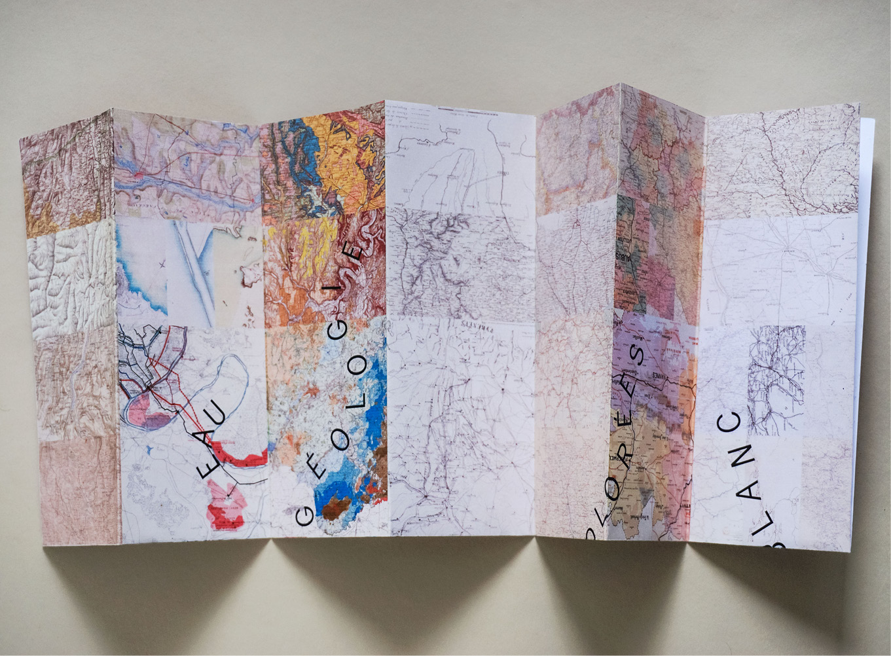
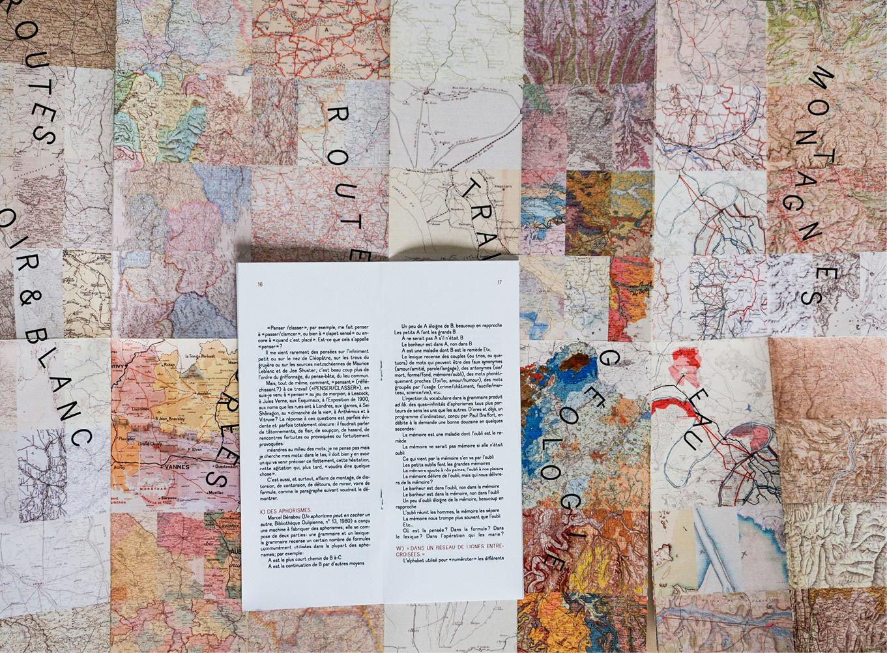
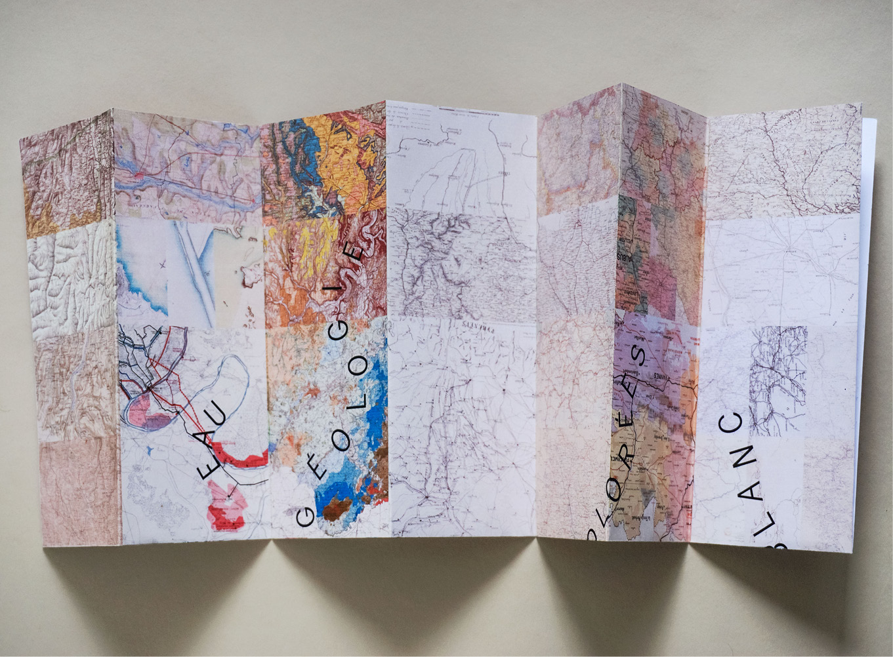
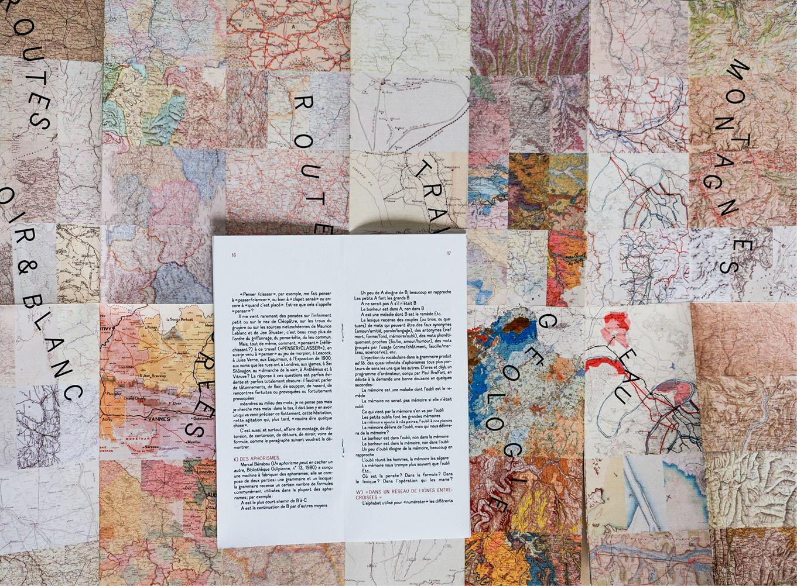
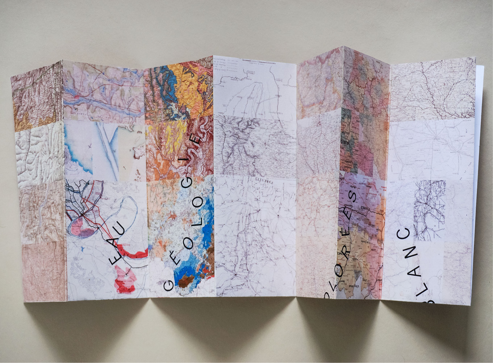
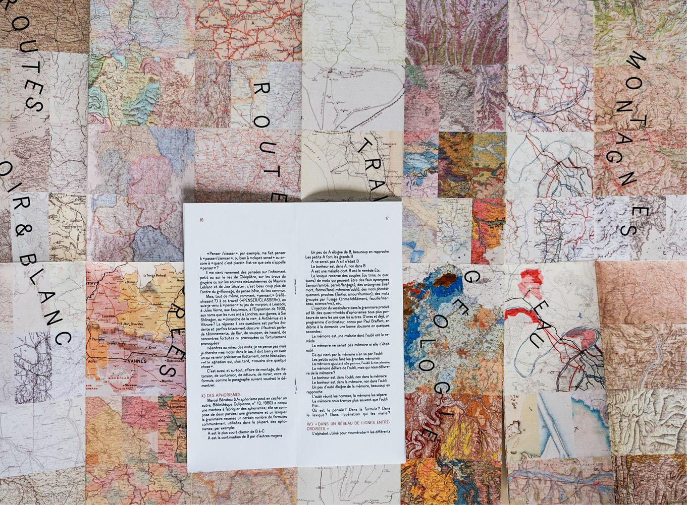

Classement de 80 cartes de régions françaises en différentes catégories, afin d'illustrer le texte « Penser, classer » de Georges Perec. D'une certaine manière j'ai cartographié des cartes, et créé une toute nouvelle carte imaginaire. Le petit livre qui l'accompagne est consacré à la mise en page du texte de Perec, et est composé avec le caractère Dauphine.

